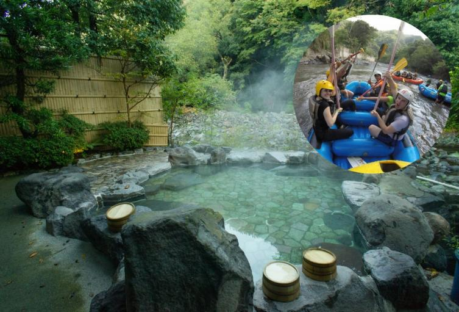

HISTORIA DE TOBIA
Chocontá es un municipio ubicado en el departamento de Cundinamarca, Colombia, en la provincia de Almeidas. Su nombre proviene del muisca, que significa “Labranza del aliado” o “Valle de la labranza”. Su historia está estrechamente vinculada con la civilización muisca, quienes habitaron esta región antes de la llegada de los españoles.
CENTRO TURISTICO
- El desarrollo del turismo ha revitalizado la economía local, atrayendo tanto a visitantes nacionales como internacionales. Tobia se ha convertido en un punto de referencia para aquellos que buscan escapadas de fin de semana desde Bogotá, dada su proximidad a la capital (a unas 2 horas por carretera).
- A partir de las últimas décadas del siglo XX y principios del siglo XXI, Tobia se ha convertido en un destino turístico popular en Cundinamarca, principalmente por su entorno natural y la posibilidad de realizar deportes de aventura. Hoy en día, es conocido por actividades como rafting, canotaje, senderismo, rappel, y otros deportes al aire libre. La geografía del lugar, que incluye montañas, ríos y cañones, es ideal para el ecoturismo y el turismo de aventura.
Galería de Imágenes

Hermosos Tarmales.

Una Bella Vista De La Naturaleza Del Municipio De Tobia.
Contacto
Para más información, puedes contactarnos a través del correo electrónico info@tobia.com.